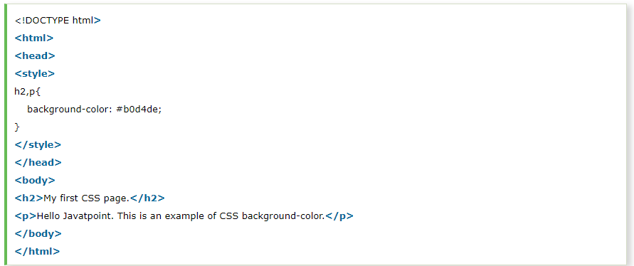
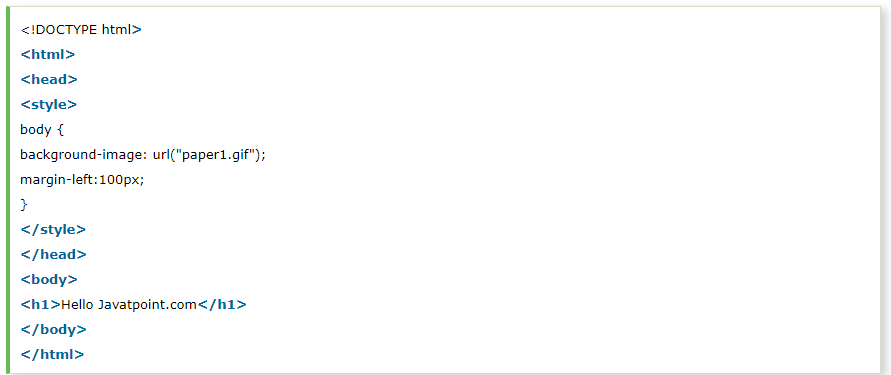
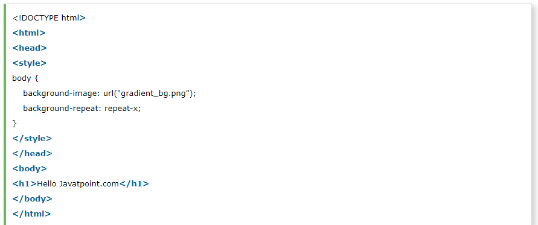
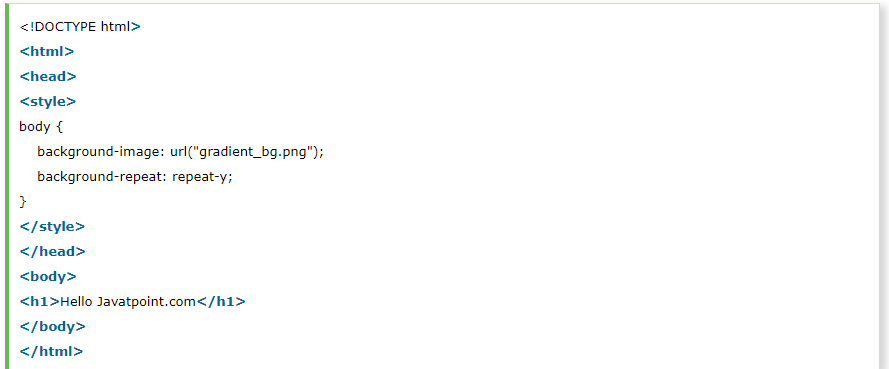
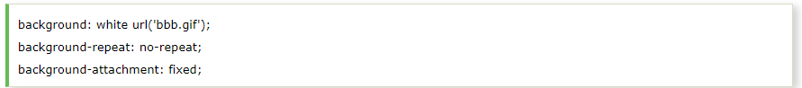

CSS background property is used to define the background effects on element. There are 5 CSS background properties that affects the HTML elements:
The background-color property is used to specify the background color of the element.
You can set the background color like this:
Output:
The background-image property is used to set an image as a background of an element. By default the image covers the entire element. You can set the background image for a page like this.
Note: The background image should be chosen according to text color. The bad combination of text and background image may be a cause of poor designed and not readable webpage.
By default, the background-image property repeats the background image horizontally and vertically. Some images are repeated only horizontally or vertically.
The background looks better if the image repeated horizontally only.
background-repeat: repeat-x;
background-repeat: repeat-y;
The background-attachment property is used to specify if the background image is fixed or scroll with the rest of the page in browser window. If you set fixed the background image then the image will not move during scrolling in the browser. Let?s take an example with fixed background image.
The background-position property is used to define the initial position of the background image. By default, the background image is placed on the top-left of the webpage.
You can set the following positions: